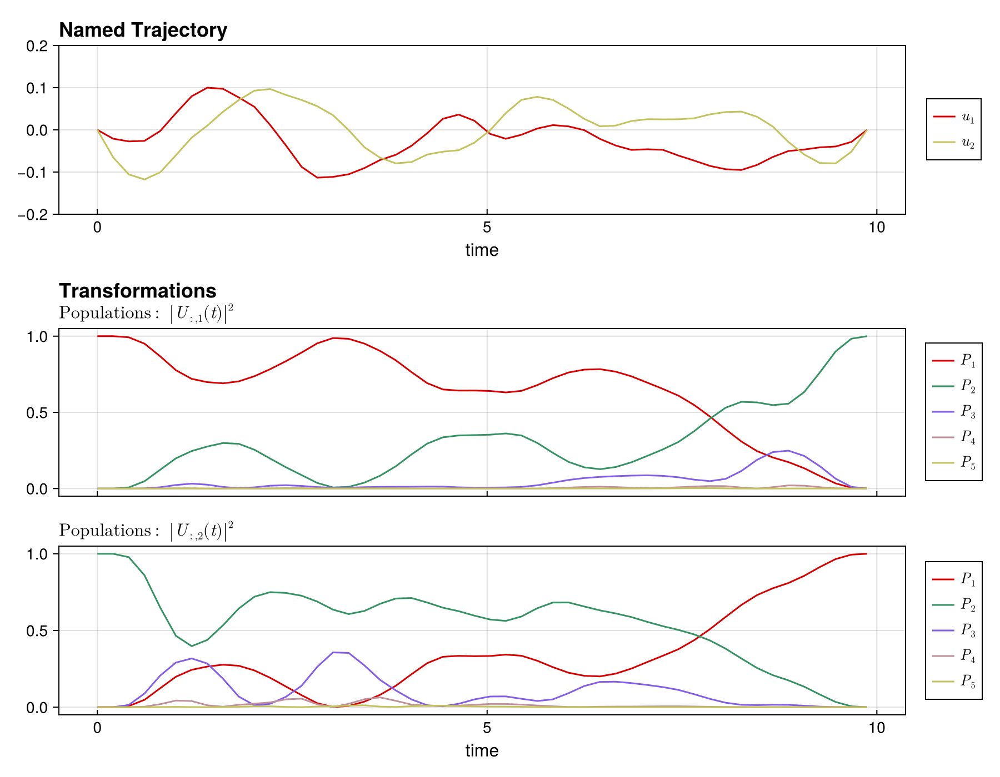
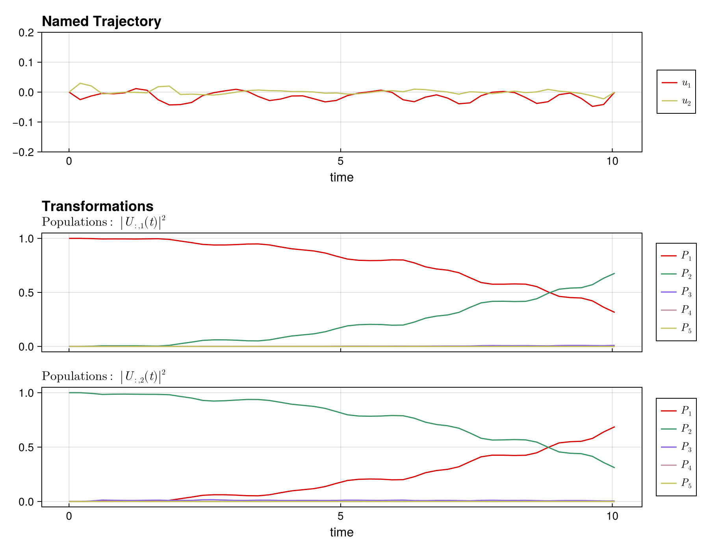

Multilevel Transmon
In this example we will look at a multilevel transmon qubit with a Hamiltonian given by
\[\hat{H}(t) = -\frac{\delta}{2} \hat{n}(\hat{n} - 1) + u_1(t) (\hat{a} + \hat{a}^\dagger) + u_2(t) i (\hat{a} - \hat{a}^\dagger)\]
where $\hat{n} = \hat{a}^\dagger \hat{a}$ is the number operator, $\hat{a}$ is the annihilation operator, $\delta$ is the anharmonicity, and $u_1(t)$ and $u_2(t)$ are control fields.
We will use the following parameter values:
\[\begin{aligned} \delta &= 0.2 \text{ GHz}\\ \abs{u_i(t)} &\leq 0.2 \text{ GHz}\\ T_0 &= 10 \text{ ns}\\ \end{aligned}\]
For convenience, we have defined the TransmonSystem function in the QuantumSystemTemplates module, which returns a QuantumSystem object for a transmon qubit. We will use this function to define the system.
Setting up the problem
To begin, let's load the necessary packages, define the system parameters, and create a QuantumSystem object using the TransmonSystem function.
using Piccolo
using SparseArrays
using Random;
Random.seed!(123);
using CairoMakie
# define the time parameters
T₀ = 10 # total time in ns
N = 50 # number of time steps
Δt = T₀ / N # time step
times = collect(range(0, T₀, length = N))
# define the system parameters
levels = 5
δ = 0.2
# add a bound to the controls
u_bound = [0.2, 0.2]
ddu_bound = 1.0
# create the system
sys = TransmonSystem(drive_bounds = u_bound, levels = levels, δ = δ)
# let's look at the drives of the system
get_drives(sys)[1] |> sparse5×5 SparseArrays.SparseMatrixCSC{ComplexF64, Int64} with 8 stored entries:
⋅ 6.28319+0.0im ⋅ ⋅ ⋅
6.28319+0.0im ⋅ 8.88577+0.0im ⋅ ⋅
⋅ 8.88577+0.0im ⋅ 10.8828+0.0im ⋅
⋅ ⋅ 10.8828+0.0im ⋅ 12.5664+0.0im
⋅ ⋅ ⋅ 12.5664+0.0im ⋅ Since this is a multilevel transmon and we want to implement an, let's say, $X$ gate on the qubit subspace, i.e., the first two levels we can utilize the EmbeddedOperator type to define the target operator.
# define the target operator
op = EmbeddedOperator(:X, sys)
# show the full operator
op.operator |> sparse5×5 SparseArrays.SparseMatrixCSC{ComplexF64, Int64} with 2 stored entries:
⋅ 1.0+0.0im ⋅ ⋅ ⋅
1.0+0.0im ⋅ ⋅ ⋅ ⋅
⋅ ⋅ ⋅ ⋅ ⋅
⋅ ⋅ ⋅ ⋅ ⋅
⋅ ⋅ ⋅ ⋅ ⋅ We can then create a pulse, trajectory, and optimization problem using the new API:
# create a random initial pulse
initial_controls = 0.1 * randn(2, N)
pulse = ZeroOrderPulse(initial_controls, times)
# create a unitary trajectory with the embedded operator as goal
qtraj = UnitaryTrajectory(sys, pulse, op)
# create the optimization problem
qcp = SmoothPulseProblem(qtraj, N; ddu_bound = ddu_bound, Q = 100.0, R = 1e-2)QuantumControlProblem{UnitaryTrajectory{ZeroOrderPulse{DataInterpolations.ConstantInterpolation{Matrix{Float64}, Vector{Float64}, Vector{Union{}}, Float64}}, SciMLBase.ODESolution{ComplexF64, 3, Vector{Matrix{ComplexF64}}, Nothing, Nothing, Vector{Float64}, Vector{Vector{Matrix{ComplexF64}}}, Nothing, SciMLBase.ODEProblem{Matrix{ComplexF64}, Tuple{Float64, Float64}, true, SciMLBase.NullParameters, SciMLBase.ODEFunction{true, SciMLBase.FullSpecialize, SciMLOperators.MatrixOperator{ComplexF64, Matrix{ComplexF64}, SciMLOperators.FilterKwargs{Nothing, Val{()}}, SciMLOperators.FilterKwargs{Piccolo.Quantum.Rollouts.var"#update!#_construct_operator##2"{QuantumSystem{Piccolo.Quantum.QuantumSystems.var"#32#33"{SparseArrays.SparseMatrixCSC{ComplexF64, Int64}, Vector{SparseArrays.SparseMatrixCSC{ComplexF64, Int64}}, Int64}, Piccolo.Quantum.QuantumSystems.var"#34#35"{Vector{SparseArrays.SparseMatrixCSC{Float64, Int64}}, Int64, SparseArrays.SparseMatrixCSC{Float64, Int64}}, @NamedTuple{}}}, Val{()}}}, LinearAlgebra.UniformScaling{Bool}, Nothing, Nothing, Nothing, Nothing, Nothing, Nothing, Nothing, Nothing, Nothing, Nothing, Nothing, Nothing, typeof(SciMLBase.DEFAULT_OBSERVED), Nothing, Piccolo.Quantum.Rollouts.PiccoloRolloutSystem{Union{Int64, AbstractVector{Int64}, CartesianIndex, CartesianIndices}}, Nothing, Nothing}, Base.Pairs{Symbol, Vector{Float64}, Nothing, @NamedTuple{tstops::Vector{Float64}, saveat::Vector{Float64}}}, SciMLBase.StandardODEProblem}, OrdinaryDiffEqLinear.MagnusGL4, OrdinaryDiffEqCore.InterpolationData{SciMLBase.ODEFunction{true, SciMLBase.FullSpecialize, SciMLOperators.MatrixOperator{ComplexF64, Matrix{ComplexF64}, SciMLOperators.FilterKwargs{Nothing, Val{()}}, SciMLOperators.FilterKwargs{Piccolo.Quantum.Rollouts.var"#update!#_construct_operator##2"{QuantumSystem{Piccolo.Quantum.QuantumSystems.var"#32#33"{SparseArrays.SparseMatrixCSC{ComplexF64, Int64}, Vector{SparseArrays.SparseMatrixCSC{ComplexF64, Int64}}, Int64}, Piccolo.Quantum.QuantumSystems.var"#34#35"{Vector{SparseArrays.SparseMatrixCSC{Float64, Int64}}, Int64, SparseArrays.SparseMatrixCSC{Float64, Int64}}, @NamedTuple{}}}, Val{()}}}, LinearAlgebra.UniformScaling{Bool}, Nothing, Nothing, Nothing, Nothing, Nothing, Nothing, Nothing, Nothing, Nothing, Nothing, Nothing, Nothing, typeof(SciMLBase.DEFAULT_OBSERVED), Nothing, Piccolo.Quantum.Rollouts.PiccoloRolloutSystem{Union{Int64, AbstractVector{Int64}, CartesianIndex, CartesianIndices}}, Nothing, Nothing}, Vector{Matrix{ComplexF64}}, Vector{Float64}, Vector{Vector{Matrix{ComplexF64}}}, Nothing, OrdinaryDiffEqLinear.MagnusGL4Cache{Matrix{ComplexF64}, Matrix{ComplexF64}, Matrix{ComplexF64}, Nothing}, Nothing}, SciMLBase.DEStats, Nothing, Nothing, Nothing, Nothing}, EmbeddedOperator{ComplexF64}}}
System: QuantumSystem{Piccolo.Quantum.QuantumSystems.var"#32#33"{SparseArrays.SparseMatrixCSC{ComplexF64, Int64}, Vector{SparseArrays.SparseMatrixCSC{ComplexF64, Int64}}, Int64}, Piccolo.Quantum.QuantumSystems.var"#34#35"{Vector{SparseArrays.SparseMatrixCSC{Float64, Int64}}, Int64, SparseArrays.SparseMatrixCSC{Float64, Int64}}, @NamedTuple{}}
Goal: EmbeddedOperator{ComplexF64}
Trajectory: 50 knots
State: Ũ⃗
Controls: uSolving the problem
# We solve the problem using `cached_solve!`, which transparently caches the
# optimized trajectory and solver output for docs purposes. In practice, you can use `solve!` directly.
cached_solve!(qcp, "multilevel_transmon"; max_iter = 50)This is Ipopt version 3.14.19, running with linear solver MUMPS 5.8.2.
Number of nonzeros in equality constraint Jacobian...: 304210
Number of nonzeros in inequality constraint Jacobian.: 0
Number of nonzeros in Lagrangian Hessian.............: 245385
Total number of variables............................: 2845
variables with only lower bounds: 50
variables with lower and upper bounds: 2646
variables with only upper bounds: 0
Total number of equality constraints.................: 2744
Total number of inequality constraints...............: 0
inequality constraints with only lower bounds: 0
inequality constraints with lower and upper bounds: 0
inequality constraints with only upper bounds: 0
iter objective inf_pr inf_du lg(mu) ||d|| lg(rg) alpha_du alpha_pr ls
0 5.8018013e+01 2.84e+00 2.80e+00 0.0 0.00e+00 - 0.00e+00 0.00e+00 0
1 1.6790439e+01 2.31e+00 4.37e+01 -0.6 2.51e+00 - 2.75e-02 1.87e-01f 1
2 1.0342928e+01 1.37e+00 4.51e+01 -0.9 1.72e+00 - 2.01e-01 4.07e-01f 1
3 9.8755775e+00 1.28e+00 4.13e+01 -0.4 2.51e+00 - 1.52e-01 6.39e-02f 1
4 3.5262043e+00 9.38e-01 3.31e+01 -2.2 1.08e+00 - 2.37e-01 2.68e-01f 1
⋮
46 2.6135677e-03 9.54e-06 8.21e+02 -4.1 1.22e+00 -3.4 4.15e-01 5.53e-03h 7
47 3.2609086e-03 5.47e-06 1.46e+02 -4.1 6.26e-03 -1.2 1.00e+00 1.00e+00h 1
48 3.0871666e-03 1.00e-05 1.46e+02 -4.0 1.54e-02 -1.6 1.00e+00 1.00e+00h 1
49 3.1455318e-03 6.17e-10 3.05e-02 -4.1 5.63e-05 1.5 1.00e+00 1.00e+00h 1
iter objective inf_pr inf_du lg(mu) ||d|| lg(rg) alpha_du alpha_pr ls
50 3.1436076e-03 3.23e-10 4.71e-04 -4.0 4.42e-05 1.0 1.00e+00 1.00e+00h 1
Number of Iterations....: 50
(scaled) (unscaled)
Objective...............: 3.1436075527583821e-03 3.1436075527583821e-03
Dual infeasibility......: 4.7137236814202214e-04 4.7137236814202214e-04
Constraint violation....: 3.2330394611479463e-10 3.2330394611479463e-10
Variable bound violation: 0.0000000000000000e+00 0.0000000000000000e+00
Complementarity.........: 1.0000212278321790e-04 1.0000212278321790e-04
Overall NLP error.......: 4.7137236814202214e-04 4.7137236814202214e-04
Number of objective function evaluations = 94
Number of objective gradient evaluations = 51
Number of equality constraint evaluations = 94
Number of inequality constraint evaluations = 0
Number of equality constraint Jacobian evaluations = 51
Number of inequality constraint Jacobian evaluations = 0
Number of Lagrangian Hessian evaluations = 50
Total seconds in IPOPT = 477.949
EXIT: Maximum Number of Iterations Exceeded.
initializing optimizer...
applying constraint: timesteps all equal constraint
applying constraint: initial value of Ũ⃗
applying constraint: initial value of u
applying constraint: final value of u
applying constraint: bounds on Ũ⃗
applying constraint: bounds on u
applying constraint: bounds on du
applying constraint: bounds on ddu
applying constraint: bounds on Δt
applying constraint: time consistency constraint (t_{k+1} = t_k + Δt_k)
applying constraint: initial time t₁ = 0
[ Info: Loaded cached trajectory from multilevel_transmon_573ffb2.jld2After optimization, we can check the fidelity in the subspace:
fid = fidelity(qcp)
println("Fidelity: ", fid)Fidelity: 0.15978591071412945Leakage suppression
As can be seen from multilevel systems, there can be substantial leakage into higher energy levels during the evolution. To mitigate this, Piccolo provides options to add leakage suppression via the PiccoloOptions type.
To implement leakage suppression, pass leakage_constraint=true and configure the leakage parameters:
# create a leakage suppression problem
qcp_leakage = SmoothPulseProblem(
qtraj,
N;
ddu_bound = ddu_bound,
Q = 100.0,
R = 1e-2,
piccolo_options = PiccoloOptions(
leakage_constraint = true,
leakage_constraint_value = 1e-2,
leakage_cost = 1e-2,
),
)
# solve the problem
cached_solve!(qcp_leakage, "multilevel_transmon_leakage"; max_iter = 50) constructing SmoothPulseProblem for UnitaryTrajectory...
applying leakage suppression: Ũ⃗ < 0.01
applying timesteps_all_equal constraint: Δt
┌ Warning: Trajectory has timestep variable :Δt but no bounds on it.
│ Adding default lower bound of 0 to prevent negative timesteps.
│
│ Recommended: Add explicit bounds when creating the trajectory:
│ NamedTrajectory(...; Δt_bounds=(min, max))
│ Example:
│ NamedTrajectory(qtraj, N; Δt_bounds=(1e-3, 0.5))
│
│ Or use timesteps_all_equal=true in problem options to fix timesteps.
└ @ DirectTrajOpt.Problems ~/.julia/packages/DirectTrajOpt/dhV4f/src/problems.jl:66
This is Ipopt version 3.14.19, running with linear solver MUMPS 5.8.2.
Number of nonzeros in equality constraint Jacobian...: 304210
Number of nonzeros in inequality constraint Jacobian.: 30870
Number of nonzeros in Lagrangian Hessian.............: 245385
Total number of variables............................: 2845
variables with only lower bounds: 50
variables with lower and upper bounds: 2646
variables with only upper bounds: 0
Total number of equality constraints.................: 2744
Total number of inequality constraints...............: 1200
inequality constraints with only lower bounds: 0
inequality constraints with lower and upper bounds: 0
inequality constraints with only upper bounds: 1200
iter objective inf_pr inf_du lg(mu) ||d|| lg(rg) alpha_du alpha_pr ls
0 1.2522700e-01 3.43e-01 2.46e-01 0.0 0.00e+00 - 0.00e+00 0.00e+00 0
1 1.8460163e-01 3.31e-01 4.79e+00 -1.7 3.29e-01 - 3.31e-01 6.09e-02h 1
2 2.2851754e-01 3.23e-01 2.89e+01 -2.2 1.78e+00 - 1.24e-01 2.49e-02h 1
3 3.1980586e-01 3.10e-01 2.80e+01 -2.4 2.60e+00 - 3.77e-02 3.73e-02h 1
4 4.4783056e-01 2.98e-01 3.14e+01 -1.1 2.17e+00 - 4.70e-02 2.95e-02f 1
⋮
46 2.4252371e+01 2.80e-03 1.11e+06 -1.4 1.16e+00 - 5.38e-01 5.08e-01f 1
47 2.2742207e+01 3.60e-03 1.21e+06 -1.9 2.43e+00 - 1.77e-01 2.92e-01f 1
48 2.2282565e+01 3.32e-03 8.06e+05 -4.0 1.59e+00 - 1.47e-01 7.19e-02f 1
49 2.1848902e+01 3.53e-03 8.29e+05 -2.1 2.38e+01 - 1.13e-02 2.68e-02f 1
iter objective inf_pr inf_du lg(mu) ||d|| lg(rg) alpha_du alpha_pr ls
50 2.1408490e+01 2.70e-03 2.85e+05 -1.8 9.25e-01 - 4.60e-01 3.00e-01f 1
Number of Iterations....: 50
(scaled) (unscaled)
Objective...............: 2.1408490185238833e+01 2.1408490185238833e+01
Dual infeasibility......: 2.8536433503155643e+05 2.8536433503155643e+05
Constraint violation....: 2.7035838307277738e-03 2.7035838307277738e-03
Variable bound violation: 0.0000000000000000e+00 0.0000000000000000e+00
Complementarity.........: 3.2186496576547950e-02 3.2186496576547950e-02
Overall NLP error.......: 2.8539763496153286e+04 2.8536433503155643e+05
Number of objective function evaluations = 51
Number of objective gradient evaluations = 51
Number of equality constraint evaluations = 51
Number of inequality constraint evaluations = 51
Number of equality constraint Jacobian evaluations = 51
Number of inequality constraint Jacobian evaluations = 51
Number of Lagrangian Hessian evaluations = 50
Total seconds in IPOPT = 455.427
EXIT: Maximum Number of Iterations Exceeded.
initializing optimizer...
applying constraint: timesteps all equal constraint
applying constraint: initial value of Ũ⃗
applying constraint: initial value of u
applying constraint: final value of u
applying constraint: bounds on Ũ⃗
applying constraint: bounds on u
applying constraint: bounds on du
applying constraint: bounds on ddu
applying constraint: bounds on Δt
applying constraint: time consistency constraint (t_{k+1} = t_k + Δt_k)
applying constraint: initial time t₁ = 0
[ Info: Loaded cached trajectory from multilevel_transmon_leakage_573ffb2.jld2The leakage suppression adds:
- An L1-norm cost on populating leakage levels (drives populations toward zero)
- A constraint that keeps leakage below the specified threshold
fid_leakage = fidelity(qcp_leakage)
println("Fidelity with leakage suppression: ", fid_leakage)Fidelity with leakage suppression: 0.10864864127647081Visualizing Results
Piccolo provides plotting utilities to visualize the unitary evolution. First, without leakage suppression:
plot_unitary_populations(get_trajectory(qcp); fig_size = (900, 700))
And with leakage suppression — you should see the population staying mostly within the computational subspace (first two levels):
plot_unitary_populations(get_trajectory(qcp_leakage); fig_size = (900, 700))
Summary
This tutorial demonstrated:
- Using
TransmonSystemto create a realistic multilevel transmon system - Using
EmbeddedOperatorto define gates on a subspace - Creating
UnitaryTrajectorywithZeroOrderPulse - Using
SmoothPulseProblemto set up the optimization - Adding leakage suppression via
PiccoloOptions
For more details on:
- Problem templates: See SmoothPulseProblem
- Leakage suppression: See Leakage Suppression
- Quantum systems: See Transmon Qubits
This page was generated using Literate.jl.